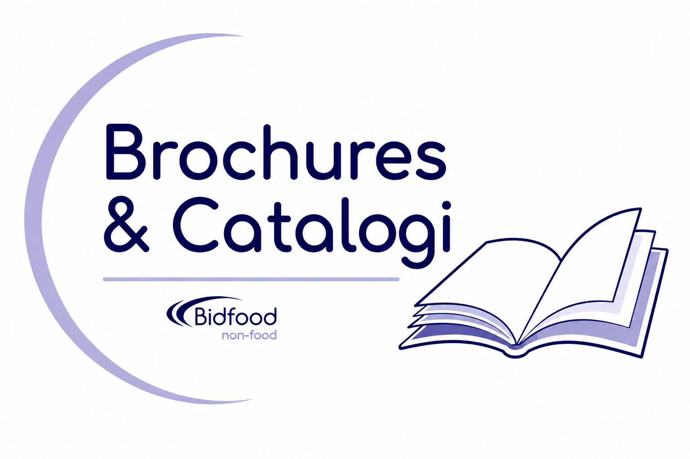
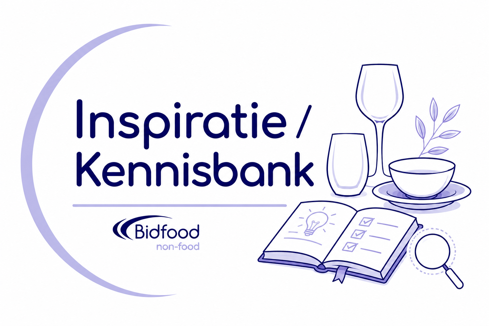
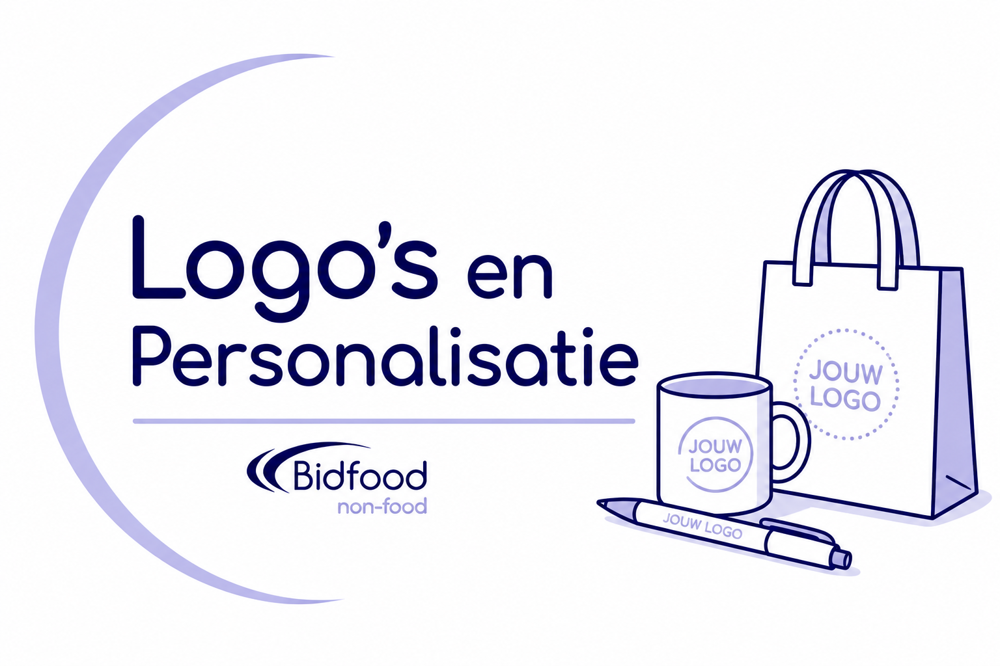
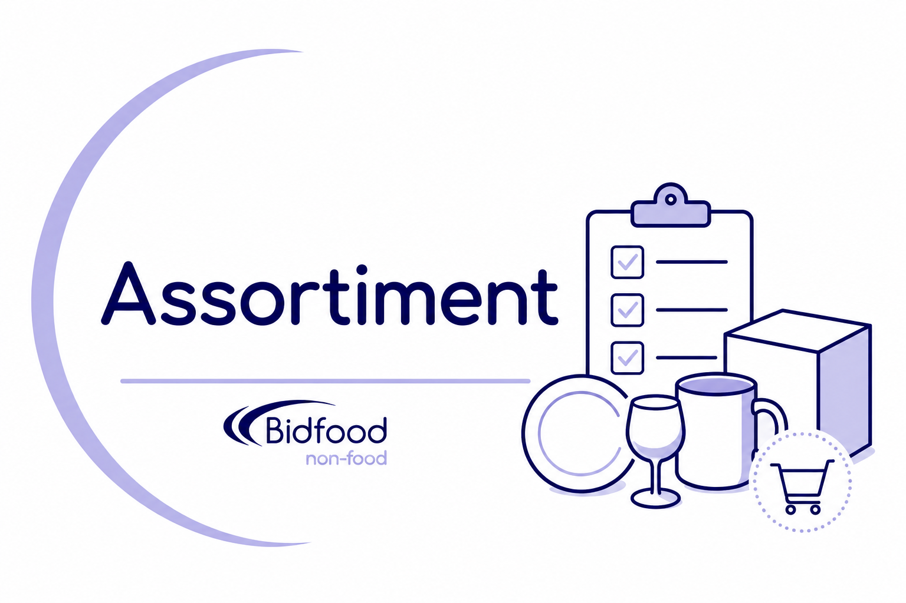
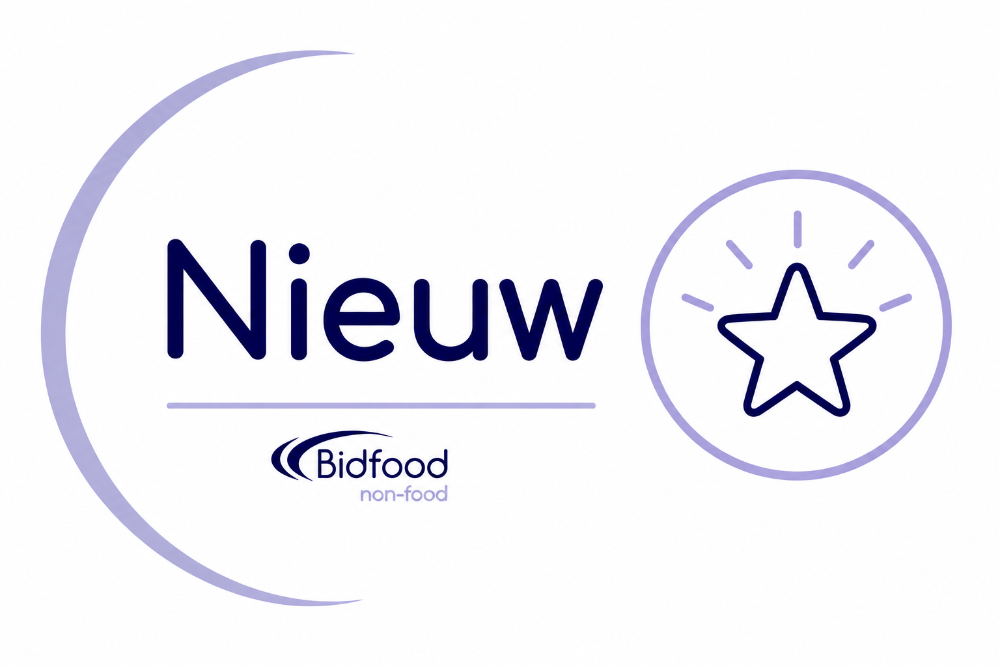
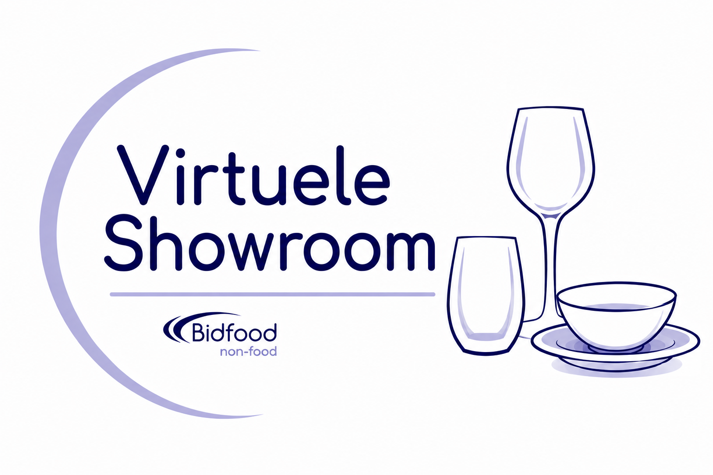
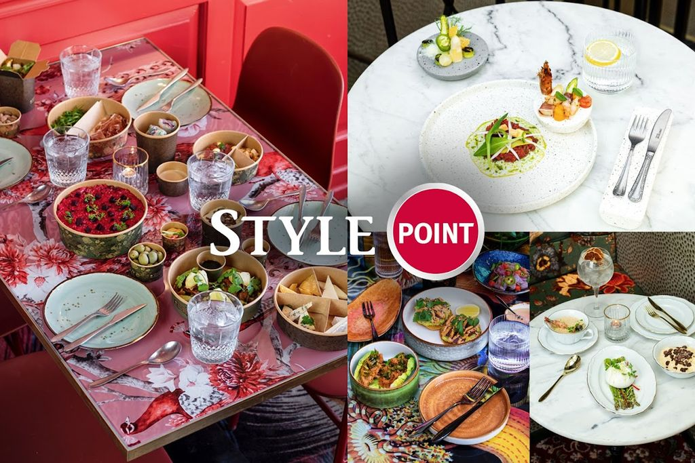

Non Food binnendienst
Voor korte vragen, prijsaanvragen, bestellen en beschikbaarheid.
Van servies en glaswerk tot buffetpresentatie, personalisatie en complete collecties.
Ontdek de mogelijkheden, download brochures en laat je inspireren.
Nieuw bij NonFoodHub? Kijk hier voor meer informatie
Ontdek wat NonFoodHub voor jouw onderneming kan betekenen. Kies het onderwerp dat het beste aansluit bij jouw vraag of laat je inspireren door de mogelijkheden.

Collecties Collecties Ontdek complete collecties en download brochures. Bekijk collecties
Inspiratie Inspiratie Praktische ideeën, trends en vakkennis voor de professionele horeca. Bekijk inspiratie
Services Services Ontdek aanvullende diensten en praktische oplossingen via onze gespecialiseerde partners. Bekijk services
Assortiment Assortiment Bekijk welke Non Food-producten direct beschikbaar zijn via Bidfood.nl. Bekijk assortiment
Uitgelicht Uitgelicht Nieuwe producten, aanbiedingen en actuele onderwerpen die je niet wilt missen. Bekijk uitgelicht
Advies Advies Onze specialisten helpen je graag verder met advies, prijzen of een showroombezoek. Neem contact opWaarom NonFoodHub
Veel horecaondernemers kennen Bidfood als leverancier van foodproducten en een zorgvuldig samengesteld Non Food-assortiment.
Maar wist je dat er daarnaast een veel groter aanbod beschikbaar is?
Van servies en glaswerk tot buffetpresentatie, personalisatie, complete collecties en specialistisch advies.
NonFoodHub helpt je deze mogelijkheden eenvoudig te ontdekken.

Inspiratie
Of je nu op zoek bent naar een nieuwe serviescollectie, ideeën voor jouw terras of manieren om jouw presentatie naar een hoger niveau te tillen: laat je inspireren door praktijksituaties, trends en vakkennis uit de horeca.
Assortiment en collecties
Een deel van ons Non Food-assortiment is direct verkrijgbaar via de Bidfood-webshop.
Maar wist je dat er daarnaast nog veel meer mogelijk is?
Ontdek complete collecties, download brochures en bekijk wat er buiten het standaard webshopassortiment beschikbaar is.
Contact
Je hoeft niet vooraf te weten welke medewerker je nodig hebt. Kies de route die past bij jouw vraag; wij zorgen dat je goed verder wordt geholpen.
Voor korte vragen, prijsaanvragen, bestellen en beschikbaarheid.
Voor grotere projecten, conceptadvies, volledige inrichting, locatiebezoek en showroomafspraken.
Kun je niet direct langskomen? Bekijk alvast digitaal onze showroom en doe inspiratie op.